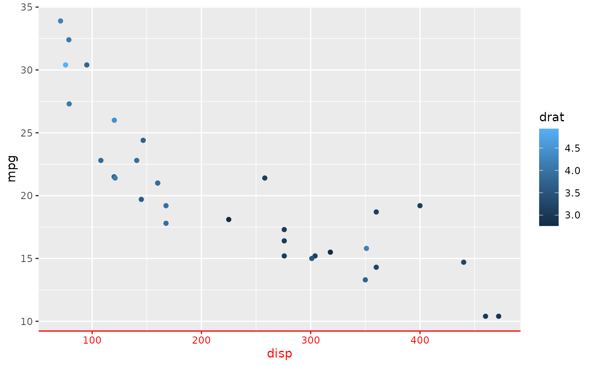
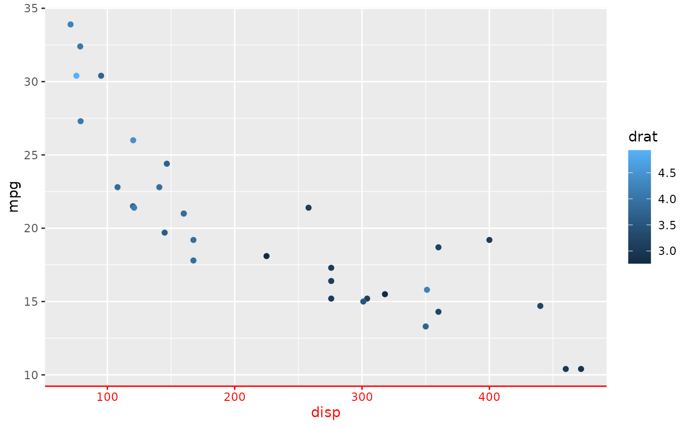

This collection of functions serves as a shortcut for theme() with
shorter argument names. Besides the shorter arguments, it also helps in
keeping theme declarations more organised.
Usage
theme_sub_axis(title, text, ticks, ticks.length, line)
theme_sub_axis_x(title, text, ticks, ticks.length, line)
theme_sub_axis_y(title, text, ticks, ticks.length, line)
theme_sub_axis_bottom(title, text, ticks, ticks.length, line)
theme_sub_axis_top(title, text, ticks, ticks.length, line)
theme_sub_axis_left(title, text, ticks, ticks.length, line)
theme_sub_axis_right(title, text, ticks, ticks.length, line)
theme_sub_legend(
background,
margin,
spacing,
spacing.x,
spacing.y,
key,
key.size,
key.height,
key.width,
text,
title,
position,
direction,
justification,
box,
box.just,
box.margin,
box.background,
box.spacing
)
theme_sub_panel(
background,
border,
spacing,
spacing.x,
spacing.y,
grid,
grid.major,
grid.minor,
grid.major.x,
grid.major.y,
grid.minor.x,
grid.minor.y,
ontop
)
theme_sub_plot(
background,
title,
title.position,
subtitle,
caption,
caption.position,
tag,
tag.position,
tag.location,
margin
)
theme_sub_strip(
background,
background.x,
background.y,
clip,
placement,
text,
text.x,
text.x.bottom,
text.x.top,
text.y,
text.y.left,
text.y.right,
switch.pad.grid,
switch.pad.wrap
)Arguments
- background, background.x, background.y, border, box, box.background, box.just, box.margin, box.spacing, caption, caption.position, clip, direction, grid, grid.major, grid.major.x, grid.major.y, grid.minor, grid.minor.x, grid.minor.y, justification, key, key.height, key.size, key.width, line, margin, ontop, placement, position, spacing, spacing.x, spacing.y, subtitle, switch.pad.grid, switch.pad.wrap, tag, tag.location, tag.position, text, text.x, text.x.bottom, text.x.top, text.y, text.y.left, text.y.right, ticks, ticks.length, title, title.position
Arguments that are renamed and passed on to
theme().
Functions
theme_sub_axis(): Theme specification for all axes.theme_sub_axis_x(): Theme specification for both x axes.theme_sub_axis_y(): Theme specification for both y axes.theme_sub_axis_bottom(): Theme specification for the bottom x axis.theme_sub_axis_top(): Theme specification for the top x axis.theme_sub_axis_left(): Theme specification for the left y axis.theme_sub_axis_right(): Theme specification for the right y axis.theme_sub_legend(): Theme specification for the legend.theme_sub_panel(): Theme specification for the panels.theme_sub_plot(): Theme specification for the whole plot.theme_sub_strip(): Theme specification for facet strips.
Examples
# A standard plot
p <- ggplot(mtcars, aes(disp, mpg, colour = drat)) +
geom_point()
red_text <- element_text(colour = "red")
red_line <- element_line(colour = "red")
# The theme settings below:
p + theme(
axis.title.x.bottom = red_text,
axis.text.x.bottom = red_text,
axis.line.x.bottom = red_line,
axis.ticks.x.bottom = red_line
)
 # Are equivalent to these less verbose theme settings
p + theme_sub_axis_bottom(
title = red_text,
text = red_text,
line = red_line,
ticks = red_line
)

# Are equivalent to these less verbose theme settings
p + theme_sub_axis_bottom(
title = red_text,
text = red_text,
line = red_line,
ticks = red_line
)
